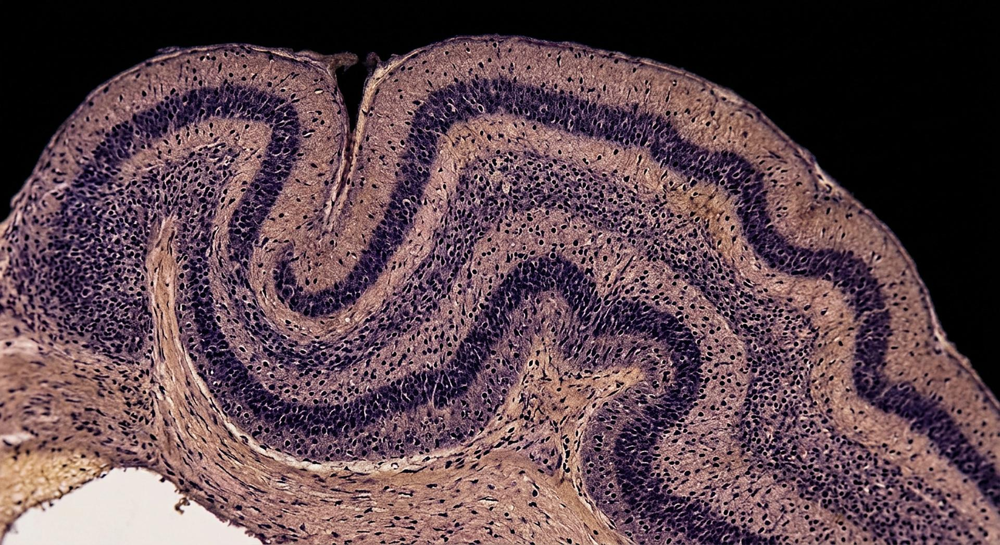

86 milliards de neurones, 1,4 kg, environ 20 watts. Assez pour reconnaître un visage, se souvenir d’une odeur — et se demander d’où il vient.
Faits établisPoints débattusRéflexion signalée
Quatre-vingt-six milliards de neurones, et autant d’autres cellules qui les nourrissent et les isolent.
Crédit : Illustration générée pour CREATIO · Licence : Usage interne au site
Cette salle traite du cerveau en refusant trois habitudes : les grands nombres jamais mesurés, la formule « objet le plus complexe connu » prise pour un résultat, et l’idée que l’imagerie « lit les pensées ». Chaque chiffre publié ici a une méthode et une date.
Textes bibliques cités
« Je te louerai de ce que, de façon redoutable, je suis fait d’une manière admirable. »
Psaume 139:14
Le psalmiste ne disposait d’aucun chiffre. Il lui suffisait de penser — ce qui est déjà le sujet de la salle.
« Il y a un esprit dans l’homme, et le souffle du Tout-Puissant leur donne l’intelligence. »
Job 32:8
Une affirmation sur l’origine de l’intelligence, présentée comme telle — pas comme une mesure.
« Vos pensées ne sont pas mes pensées, et mes voies ne sont pas vos voies. »
Ésaïe 55:8
La limite de notre compréhension, énoncée comme une évidence avant tout examen du cerveau.
M1
Quatre-vingt-six milliards de neurones
Le cerveau humain adulte contient environ 86 milliards de neurones et environ 85 milliards d’autres cellules. Ce chiffre vient d’un comptage par fractionnement isotrope, publié en 2009, avec une incertitude de l’ordre de 78,8 à 95,4 milliards. Le célèbre « 100 milliards » était une estimation reprise de manuel en manuel, jamais mesurée.

Des couches empilées, un câblage dense : c’est l’organisation qui fait la différence, pas le nombre.
Crédit : Illustration générée pour CREATIO · Licence : Usage interne au site
≈ 86milliards de neurones (et ≈ 85 milliards d’autres cellules)
Le cerveau humain adulte compte environ 86 milliards de neurones et autant de cellules non neuronales ; le chiffre de 100 milliards était une estimation non mesurée.
Un nombre du même ordre que celui des étoiles de notre galaxie, dans un organe de 1,4 kg.
Nuance
Un travail statistique de 2025 a contesté la précision de ce chiffre (fourchette 61 à 99 milliards selon les études). Le musée publie donc 86 milliards comme **la meilleure mesure disponible**, pas comme une certitude définitive.
M2
Vingt pour cent de l’énergie pour deux pour cent de la masse
Le cerveau représente environ 2 % de la masse corporelle et consomme de l’ordre de 20 % de l’oxygène et du glucose au repos. C’est un organe petit, coûteux, et qui ne s’éteint jamais : même dans le sommeil, son métabolisme reste élevé.
≈ 20 %de la dépense énergétique de repos, pour ≈ 2 % de la masse
Le cerveau consomme environ 20 % de l’oxygène et du glucose de l’organisme au repos alors qu’il ne représente que 2 % de sa masse.
Un organe qui coûte cher au repos, et dont la dépense varie peu quand on « réfléchit fort ».
Nuance
Une tâche cognitive difficile ne fait grimper la consommation que de quelques pour cent à l’échelle de l’organe : le coût est dans l’entretien des neurones, pas dans l’effort de réflexion.
M3
Vingt watts
La puissance du cerveau humain est de l’ordre d’une vingtaine de watts — l’équivalent d’une ampoule économique. En vingt watts, il reconnaît un visage, comprend une phrase, se souvient et dirige un corps entier.
Vingt watts, et la capacité de se demander d’où l’on vient.
Crédit : Illustration générée pour CREATIO · Licence : Usage interne au site
≈ 20watts (ordre de grandeur)
La puissance métabolique du cerveau humain est de l’ordre de 20 watts, avec des estimations publiées allant souvent de 15 à 25 W.
Vingt watts : moins qu’une bouilloire, pour des tâches qu’aucune machine de même consommation ne réalise.
Nuance
Ordre de grandeur, pas une mesure unique. La comparaison avec un ordinateur est frappante mais piégeuse : les deux machines ne font pas les mêmes opérations, et le cerveau est bien plus lent à chaque étape.
M4
Un cerveau de primate agrandi
En 2009 puis en 2012, les comptages ont montré que le cerveau humain a le nombre de neurones attendu pour un primate de sa taille, avec un rapport neurones / autres cellules de 1 pour 1 — et non 10 pour 1 comme on le croyait.
1 : 1rapport neurones / cellules non neuronales
Le cerveau humain ne présente pas de composition exceptionnelle : son nombre de neurones suit l’attendu pour un primate de sa taille, avec un rapport 1:1 entre neurones et autres cellules.
Un cerveau de primate agrandi — et pourtant aucun autre primate n’écrit de musique.
Nuance
Ce résultat **ne nie pas la spécificité humaine** : il la déplace du **nombre** vers l'**organisation** — connexions, cortex, culture, langage. Il est souvent mal compris dans les deux sens, et la salle l’écrit explicitement.
M5
Combien de synapses ? Une estimation, pas un comptage
Le nombre total de synapses du cerveau humain n’a jamais été compté exhaustivement. L’estimation stéréologique la plus citée donne environ 150 billions de synapses dans le néocortex seul — une extrapolation à partir d’échantillons de tissu. Les valeurs qui circulent vont de 10¹⁴ à 10¹⁵.
≈ 150 billionssynapses dans le néocortex (estimation stéréologique, Pakkenberg 2003)
Le nombre de synapses du cerveau humain est estimé, non compté : environ 0,15 × 10¹⁵ dans le néocortex, avec une variabilité liée à l’âge, et sans comptage exhaustif du cerveau entier.
Un chiffre célèbre, fondé sur des mesures réelles — mais sur des échantillons, pas sur un inventaire.
Nuance
La formule « 1 000 billions de synapses » circule partout sans mesure correspondante. Le musée publie l’estimation, sa **méthode** et sa **portée** (néocortex seul), et refuse les chiffres ronds qui ne viennent de nulle part.
M6
Cent mètres par seconde
Un axone myélinisé conduit un signal à environ 100 mètres par seconde ; sans myéline, la même fibre plafonne à moins d’un mètre par seconde. La gaine de myéline, en segments, fait gagner deux ordres de grandeur — ce qui rend possible la coordination rapide d’un corps d’un mètre soixante-dix.
L’isolation fait gagner deux ordres de grandeur : jusqu’à cent mètres par seconde.
Crédit : Illustration générée pour CREATIO · Licence : Usage interne au site
≈ 100mètres par seconde (axone myélinisé), contre < 1 m/s sans myéline
La myéline accélère la conduction nerveuse d’environ deux ordres de grandeur : jusqu’à environ 100 m/s chez l’humain.
Le même câble, avec ou sans isolation : d’un mètre par seconde à cent.
Nuance
Les valeurs maximales citées vont de 100 à 120 m/s et dépendent du diamètre de la fibre. « Cent mètres par seconde » est un ordre de grandeur, pas une constante.
Ce que la science dit honnêtement
Les limites, dites franchement
Les grands chiffres du cerveau sont fragiles
« 100 milliards de neurones », « 1 000 milliards de synapses », « 10 000 connexions par neurone » : aucun de ces nombres n’est une mesure directe. Le musée publie celui qui a été mesuré (86 milliards), l’estimation qui a une méthode (150 billions de synapses dans le néocortex), et bloque les autres.
« L’objet le plus complexe connu » est une formule
C’est un titre éditorial, pas un résultat : on ne sait pas classer la complexité, ni comparer un cerveau à un écosystème ou à un réseau de gènes. La salle garde l’expression parce qu’elle est belle, et explique juste après qu’elle n’est pas mesurable.
Ni « 10 % », ni lecture de pensées
La fausse idée des 10 % est écartée explicitement ; l’imagerie cérébrale mesure des variations d’activité avec un bruit considérable, elle ne lit pas des phrases dans une tête. Quant à la conscience, personne ne sait l’expliquer — et cette salle ne prétend pas le contraire.
Réflexion — et non mesure
Lecture proposée
Un organe de 1,4 kg qui consomme l’équivalent d’une ampoule, et qui reconnaît un visage, se souvient d’une odeur d’enfance, apprend une langue et se demande d’où il vient. Les chiffres impressionnent, mais ce n’est pas le nombre de neurones qui frappe le plus : c’est qu’il soit **organisé**. Les mesures décrivent un cerveau de primate agrandi ; et pourtant aucun autre primate n’écrit de musique ni ne mesure son propre cerveau. La différence n’est donc pas quantitative : elle est dans l’agencement, et dans ce qu’on en fait. « Je te louerai de ce que, de façon redoutable, je suis fait d’une manière admirable » : le psalmiste ne disposait d’aucun chiffre. Il lui suffisait de penser — et l’acte de penser reste, pour la science, un problème ouvert.
« Il a mis dans leur cœur la pensée de l’éternité. »
Ecclésiaste 3:11
Questions honnêtes
Les objections, prises au sérieux
« Utilisons-nous seulement 10 % de notre cerveau ? »
Non. Cette idée n’a aucun fondement : l’imagerie montre une activité répartie, et les lésions ont presque toujours des conséquences. C’est l’un des rares mythes qu’on peut qualifier de faux sans nuance.
« Le cerveau est-il un ordinateur ? »
La métaphore est utile à l’ingénieur et trompeuse pour le biologiste : le cerveau est analogique, lent, massivement parallèle, chimique, et il se réorganise en permanence. Il n’a ni mémoire adressable ni horloge.
« Peut-on lire les pensées ? »
Très partiellement, avec un entraînement lourd et la coopération du sujet, et pour des contenus limités. Le musée refuse le sensationnalisme : décoder une préférence n’est pas lire une phrase.
« Pourquoi ne donnez-vous pas de nombre de synapses tout rond ? »
Parce qu’aucun comptage exhaustif n’existe. L’estimation publiée (≈ 150 billions dans le néocortex) vient d’échantillons, et sa portée est limitée. Un musée qui annoncerait « 1 000 billions » sans méthode inventerait — et ce musée préfère renoncer à un chiffre spectaculaire.
« Où est la conscience ? »
On ne le sait pas. C’est l’un des grands problèmes ouverts : les corrélats neuronaux sont étudiés, l’explication ne l’est pas. Cette salle l’assume au lieu de le maquiller.
Ce que l’on pourra manipuler
Interactions de la salle
Chaque interaction possède un repli lisible sans JavaScript.
Interaction
Contenu
Repli
Budget énergétique
Une jauge compare la consommation du cerveau à celle d’autres organes. Le visiteur « allume » une tâche mentale et constate que la variation, à l’échelle de l’organe, reste faible.
Tableau du budget énergétique par organe au repos, avec la part du cerveau et la référence de 2001.
Vitesse de conduction
Deux axones, avec et sans myéline, lancent une course animée : le facteur ≈ 100 est affiché en direct, avec la source.
Les deux vitesses en chiffres (≈ 100 m/s et < 1 m/s) et l’explication de la conduction saltatoire.
Compteur de neurones
Une visualisation par blocs d’un milliard : l’utilisateur « compte » jusqu’à 86. Un panneau explique pourquoi le chiffre de 100 milliards a régné si longtemps sans avoir été mesuré.
Le chiffre, son incertitude (78,8 à 95,4 milliards), la méthode et la contestation statistique de 2025.
Les mythes du cerveau
Cinq affirmations à classer — vrai / faux / sans mesure : les 10 %, le cerveau « gauche / droit », les 1 000 milliards de synapses, les 10 000 connexions par neurone, l’idée d’un cerveau « qui ne se répare pas ».
Les cinq affirmations avec leur statut et leur correction, en toutes lettres.
Aile VIII · Le Cabinet des merveilles
Aller plus loin : les fiches du Cabinet
Cette salle donne l’essentiel. Le Cabinet reprend chaque mécanisme avec sa source primaire,
son chiffre daté et sa question honnête.
Huit bras qui goûtent ce qu’ils touchent, se déplacent sans consulter le cerveau central, et se nouent sans jamais se prendre eux-mêmes pour une proie.